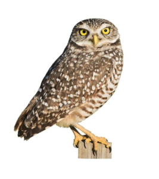
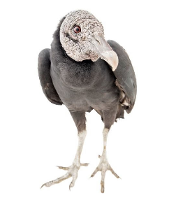
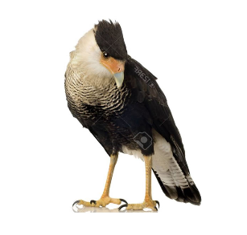
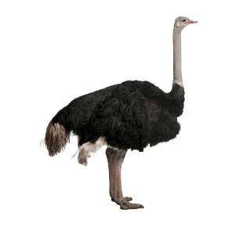
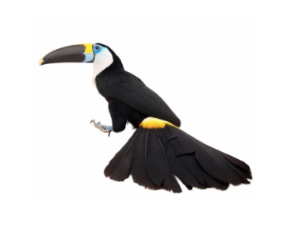
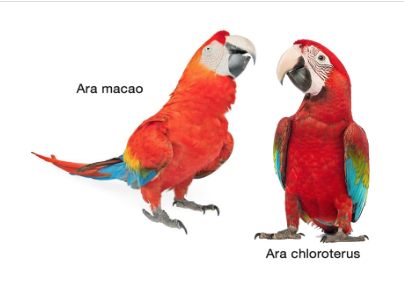
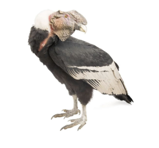

Con 9500 a 10 000 especies, según la clasificación taxonómica que se adopte, las aves son el grupo de vertebrados terrestres más diverso. Las aves son los parientes contemporáneos de los dinosaurios terópodos, como el Tyrannosaurus rex, y son los únicos vertebrados actuales que poseen plumas y las extremidades anteriores en forma de alas. Su origen data de hace más de 60 millones de años, aunque otros cien millones de años atrás existían dinosarios pequeños, como el célebre Archaeopteryx, que poseían plumas que al parecer utilizaban para mejorar su desplazamiento.
La mayor diversidad de especies de aves se concentra en la región Neotropical (Centroamérica, Suramérica y el Caribe), con alrededor de 4000 especies. Ecuador destaca entre los países neotropicales con mayor número de especies, solo detrás de Colombia, Brasil y Perú (y en ciertos listados de especies, también de Indonesia). El tamaño del Ecuador con respecto a estos países hace que sus 1690 especies registradas hasta hoy sean una cifra sorprendente (apenas unas 200 especies menos).
Decir que las aves pueblan todo el planeta no es una exageración. Regiones remotas, como los hielos antárticos, islas oceánicas apartadas de cualquier superficie continental o grandes desiertos, que resultan inaccesibles para otros vertebrados terrestres, han sido conquistadas por las aves. Naturalmente, estas regiones no poseen una diversidad considerable de especies como los bosques tropicales. Su adaptación a ecosistemas muy disímiles ha derivado en una gran diversidad de tamaños (desde los 5 cm del colibrí más pequeño a los 2,75 m del avestruz) y una sorprendente variedad de hábitos alimenticios, reproductivos, sociales y migratorios.
Las Aves en Zoo Animals
En nuestras instalaciones contamos con un parque de aves donde las especies
pueden sentirse como su habitad natural, en el zoo encontramos las siguientes:
Búho terrestre

Gallinazo negro

Caracara crestado norteño

-
Avestruz

-
Tucán Goliblanco

-
Guacamayo escarlata y guacamayo rojo y verde

-
Condor
